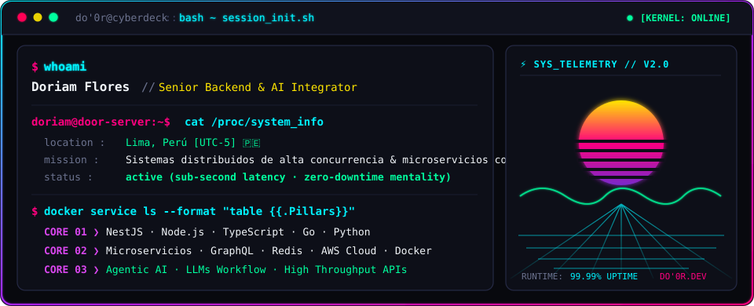
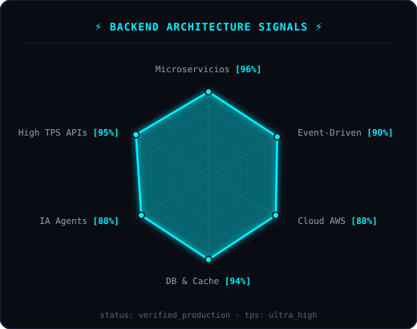
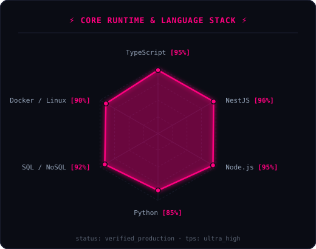

⚡ $ whoami

👾 $ cat tech-stack.yaml
doriam@nightcity:~$ cat tech-stack.yaml |
|
|---|---|
├─ ⚡ backend_core:Node.js · NestJS · Express · TypeScript · Python · Go
|
├─ ▣ databases_cache:PostgreSQL · MySQL · MongoDB · Redis (Cache & PubSub)
|
├─ 🤖 ai_agents_workflow:OpenAI · LangChain · Claude · LLM Agents · Prompt Engineering
|
├─ ☁ cloud_containers_devops:AWS (EC2, Lambda, S3, SNS) · Docker · Linux · Nginx · Jenkins
|
├─ 📡 architecture_messaging:Microservicios · GraphQL Apollo · Kafka · RabbitMQ · WebSockets
|
╰─ 🔒 security_standards:Clean Architecture · SOLID · OWASP · JWT/RBAC · Swagger OpenAPI
|
status: ready_for_production · environment: distributed_cluster · latency: sub_second |
|
📡 $ sysctl --telemetry-radars
|
 |
 |
signals: backend_architecture_radar · runtime_stack_radar · status: healthy [zero_packet_loss]